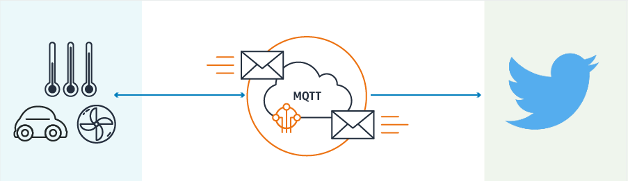

This service provides a bridge between AWS IoT and Twitter for your devices to tweet messages directly to Twitter.

The AWS Serverless Application Repository is a collection of serverless applications ranging from code samples and components for building web and mobile applications to back-end processing services and complete applications. Each application is packaged with an AWS Serverless Application Model (SAM) template that defines the AWS resources used. The Serverless Application Repository enables you to quickly deploy these code samples, components, and applications for common use cases such as web and mobile back-ends, data processing, chatbots, IoT, and more. There is no charge to use the Serverless Application Repository - you only pay for the AWS resources used in the applications you deploy.
Check this launch video for more details.
NOTE - Keep the "Consumer Secret" a secret. This key should never be human-readable in your application. This access token can be used to make API requests on your own account's behalf. Do not share your access token secret with anyone.
You will need the following information from the previous steps and configure them in the template.yaml file
The following Input Format is expected from the IoT Topic to trigger the Twitter workflow
{
"deviceID": "deviceID123",
"incomingText": "Text From Device"
}
This is released under the MIT license. Details can be found in the LICENSE file.